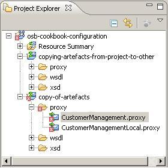
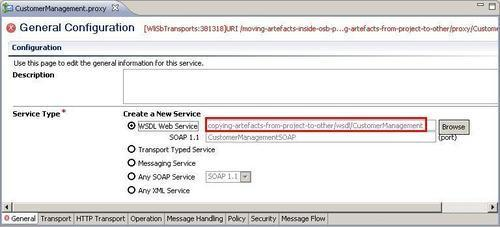
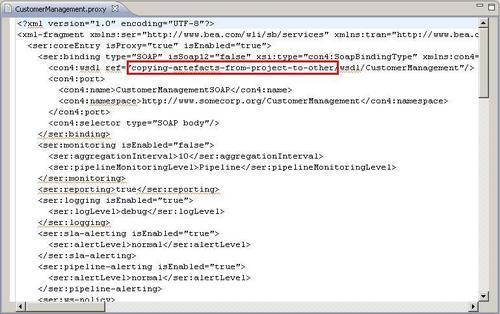

This recipe will show how to copy artifacts from one OSB project into another OSB project. This is useful for duplicating artifacts in order to reuse them.
We will use the same project as in the previous recipe, with one proxy service calling another proxy service.
Import the base OSB project for this recipe from here: \chapter-2\getting-ready\copying-artifacts-from-project-to-other.
Let's see how we can copy the proxy, wsdl and xsd artifacts into another OSB project. For that we first create a new OSB project in the same OSB configuration and then copy the artifacts. In Eclipse OEPE, perform the following steps:


Save all the artifacts and the error marker should disappear. There is one last thing to adapt. The CustomerManagement proxy service is invoking the CustomerManagementLocal proxy service and the Routing action is also including the project name in the Service configuration. This has to be change too:
This finishes the necessary refactorings for this simple case. Depending on the complexity of the artifacts and their interrelationships, many more actions might be necessary.
If we copy artifacts from one OSB project to another within Eclipse OEPE, then all the links referring to other artifacts are not changed as well. This may be correct, if the link is pointing to an artifact residing outside of the originating project. If the link is referring to a local artifact, then this is probably wrong and has to stay local, that is, it needs to be changed manually after copying the resources.
The same steps will be necessary if artifacts are copied from outside, that is, from a file explorer into Eclipse OEPE.
We have also seen that not all the wrong links will be marked as an error. A Routing action will still be fine as long as the artifact its invoking is still there, even if it's in another project.
Instead of changing the errors caused by the copy of the artifacts manually through the different Eclipse OEPE editors, it can also be done directly on the source (XML representation) of the proxy service.
To open the source representation of the CustomerManagement proxy service, perform the following steps in Eclipse OEPE:
find/replace operation, which can be found in the menu File | Find Replace.
Of course, we have to be very careful to not invalidate the structure of the XML when doing changes directly on the XML source code of the proxy service. Otherwise the editor view will no longer work.
If the same changes have to be applied on multiple file, then a global search and replace on the whole project can be done. A global search and replace is available through the Search menu:
Again be careful to really change the right occurrences only.
When directly manipulating the XML source code of the OSB artifacts, it's always a good idea to keep a copy of the previous version, that is, in a version control system such as Subversion or GIT.